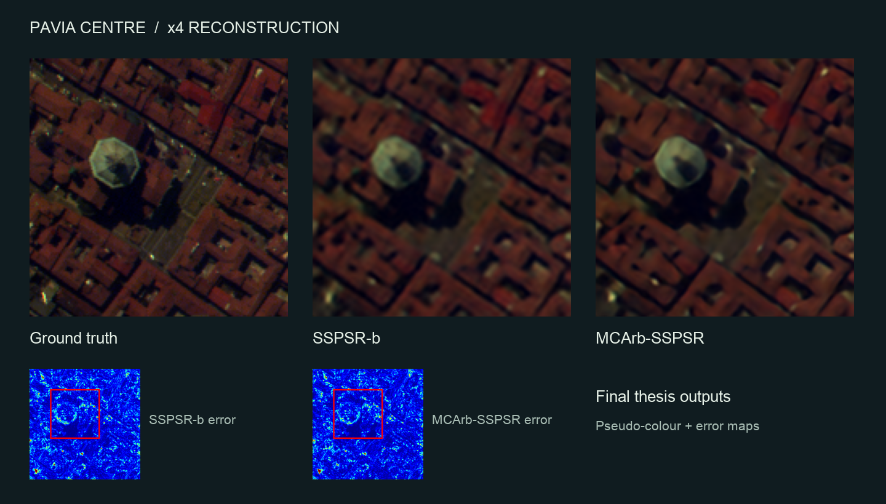
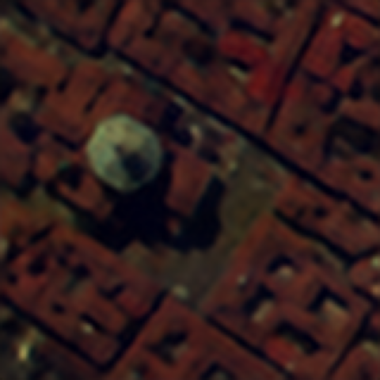
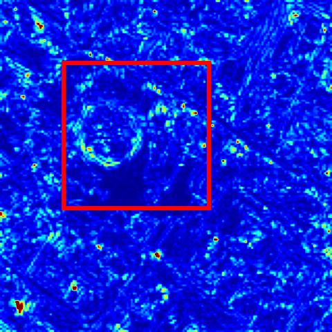
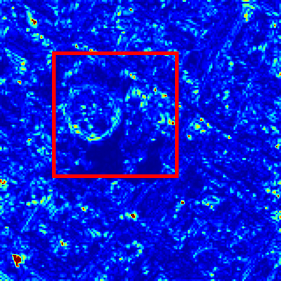
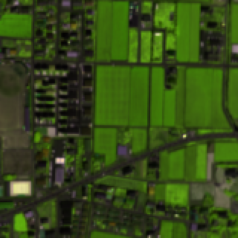
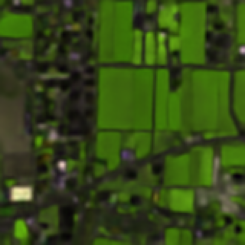
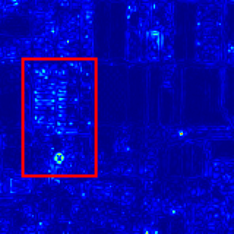
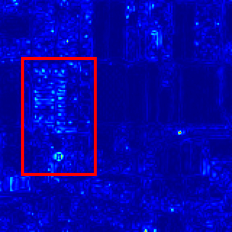

框架复现与数据
复现MCArb框架（Zhang et al., IEEE TGRS 2025），以MCNet／SSPSR／ERCSR为主干，加入3DMetaUM、SAFAM及3DSPPM模块，开展空谱特征学习与多尺度高光谱重建。
2025.10 – 2026.05
复现高光谱影像重建方法，比较重建图、误差图与像素光谱，检查空间细节和光谱保真度。
基线与候选模型分别比较。部分重建图的空间误差减小，光谱偏差却增大。
复现MCArb框架（Zhang et al., IEEE TGRS 2025），以MCNet／SSPSR／ERCSR为主干，加入3DMetaUM、SAFAM及3DSPPM模块，开展空谱特征学习与多尺度高光谱重建。
在MATLAB中预处理Pavia Centre与Chikusei数据；开发Python评测流程，计算PSNR、SSIM、CC、RMSE、SAM和ERGAS，按逐图平均汇总，并生成重建图像和误差图。
开展协同学习、三维上采样和跨尺度特征对齐消融；在Pavia Centre的×4／×8下，替换为二维上采样使ERCSR的PSNR分别下降1.31／0.42 dB。×2辅助上采样倍率与25%裁剪面积比例取得较均衡结果，与原文一致。
Pavia Centre ×4／×8下，三类MCArb模型的PSNR、SSIM和CC均优于对应基线；MCArb-SSPSR在两数据集及两个尺度上的六项指标均改善（相较SSPSR-b，PSNR +0.21–0.36 dB），并分析空间质量与光谱保真度的权衡。

直接使用最终毕设文件中的图像；点击图片查看原图。图像用于观察局部细节，指标表用于比较完整评价结果。










| 数据集 | 尺度 | 方法 | PSNR ↑ | SSIM ↑ | CC ↑ | RMSE ↓ | SAM ↓ | ERGAS ↓ |
|---|---|---|---|---|---|---|---|---|
| Pavia Centre | 4× | SSPSR-b | 29.2801 | 0.8108 | 0.8914 | 9.1006 | 5.7914 | 5.8655 |
| Pavia Centre | 4× | MCArb-SSPSR | 29.4855 | 0.8203 | 0.8964 | 8.8795 | 5.5258 | 5.7345 |
| Pavia Centre | 8× | SSPSR-b | 25.4311 | 0.5300 | 0.7194 | 14.5527 | 7.5718 | 4.5157 |
| Pavia Centre | 8× | MCArb-SSPSR | 25.7143 | 0.5658 | 0.7390 | 14.0689 | 7.3175 | 4.3708 |
| Chikusei | 4× | SSPSR-b | 40.5122 | 0.9388 | 0.9484 | 3.0134 | 2.5055 | 5.0171 |
| Chikusei | 4× | MCArb-SSPSR | 40.7485 | 0.9418 | 0.9508 | 2.9396 | 2.4609 | 4.8932 |
| Chikusei | 8× | SSPSR-b | 36.0770 | 0.8444 | 0.8566 | 5.0120 | 4.2521 | 4.1298 |
| Chikusei | 8× | MCArb-SSPSR | 36.4375 | 0.8553 | 0.8674 | 4.8249 | 4.0616 | 3.9590 |
论文归档表4.1／4.2；SSPSR-b与MCArb-SSPSR对应比较。评测流程先对每幅图像计算指标，再求图像平均；工作台的多场景分组比较为另一项结果组织功能。
评价流程、可视化与MATLAB预处理代码取自最终归档，逐文件摘要保存在材料清单中。